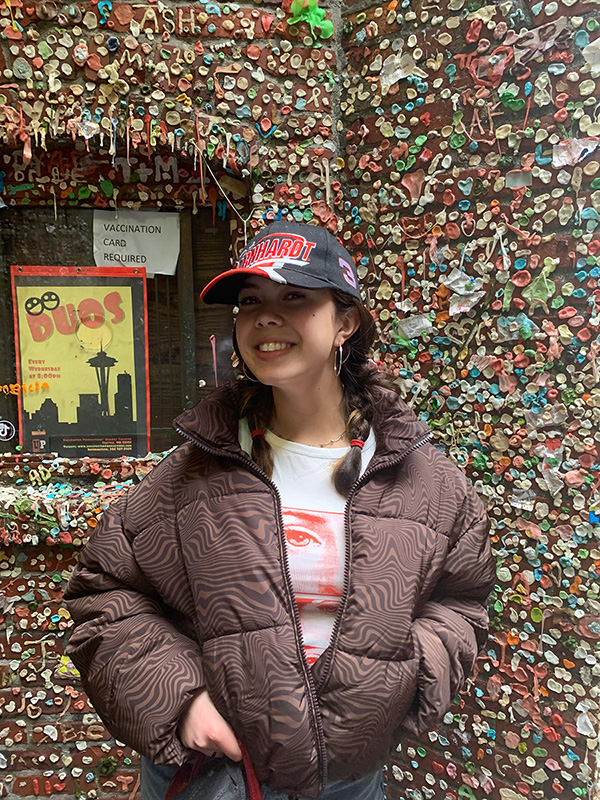

My name is Grace Tawatao and I am a Seattle/San Francisco based graphic designer and artist.
My name is Grace Tawatao and I am currently a sophomore at the University of San Francisco with plans to graduate in the spring of 2025. Growing up in Seattle I was always attracted to the arts and began my creative journey with drawing and painting. I continued that journey by exploring other art forms such as dance, photography, and music. Presently, I am studying to receive a Bachelors Degree in design at my university in order to continue on my creative life track.
Along with design I am also planning to complete a minor in computer science. With an education in arts and technology I’ve been able to explore how those two studies intertwine in the forms of web development and user experience. Discovering the endless possibilities that design and computer science offer is extremely fascinating and I am working to cultivate a future for myself in a field where I can use both to make a positive impact.